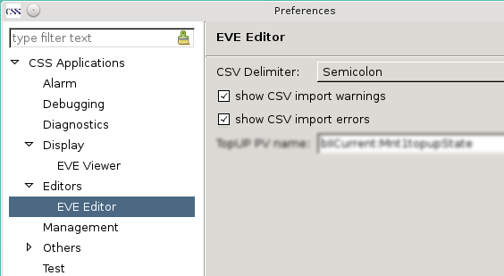
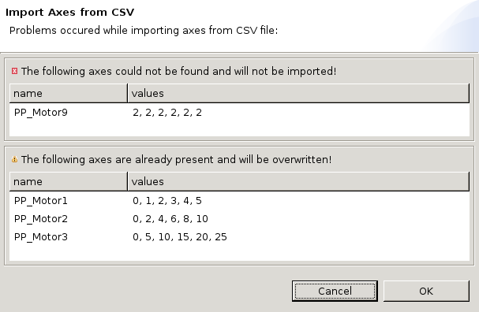

Motor Axes (positions) can be imported from a CSV file. The CSV file must be formatted as follows:
An example content of a file:
PP_Motor1;PP_Motor2;PP_Motor3;PP_Motor4;Filter_1;Filter_2
0;0;0;2.3;A;B
1;2;5;2.4;A;B
2;4;10;2.5;A;B
3;6;15;2.4;A;B
4;8;20;2.3;A;B
5;10;25;2.2;A;B
The default delimiter is a ‚semicolon’. It can be configured in the Preferences:

The two check boxes define whether warnings and/or errors should be reported. If there were both warnings and errors during the CSV import then a dialog like the following will be shown:

Enabling only one type of reporting in the preferences eventually shows only that kind of messages. If neither warnings nor errors are enabled no dialog is shown at all (even if warnings or errors were generated by the import).
As described in the image above:
Keep in mind that when disabling warning and error messages this will be done without warning.